Case Study
An open-core Windows background-process watchdog: restarts a crashed or unresponsive target automatically, with a local web dashboard and a Flutter mobile companion app for remote monitoring and control, an LLM tool-use agent that turns a raw crash into a plain-English diagnosis, and a Model Context Protocol server that exposes it all to Claude Desktop and Claude Code directly — packaged and released through automated CI/CD.
A packaging defect invisible to the test suite and the build's own success report: the compiler bundled every Python module it could trace through an import, but a dashboard file read from disk at runtime wasn't "imported," so it was silently left out of the shipped executable. Caught only by running the real compiled binary end-to-end and reading its actual error output, not by trusting a clean build.
A Windows-11-specific process-launch bug: a flag combination that should produce an invisible background relaunch instead caused the OS to open a visible terminal window, confirmed by direct, repeated live testing rather than the first plausible fix.
Adopt-before-launch startup logic that checks whether a healthy instance already exists before spawning a new one, preventing the infinite respawn loop a naive "process died → relaunch" check would otherwise cause.
Live config reload and a PIN-gated remote restart, so adding, editing, or restarting a supervised target — from the dashboard or the phone — never requires stopping the service itself.
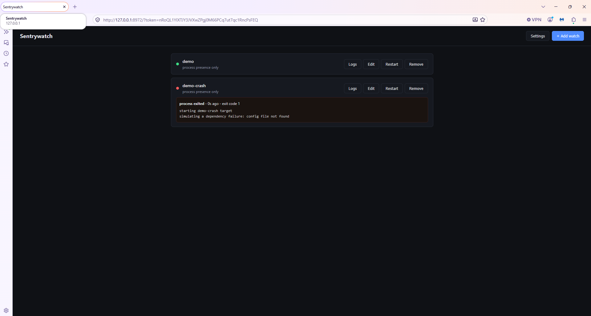
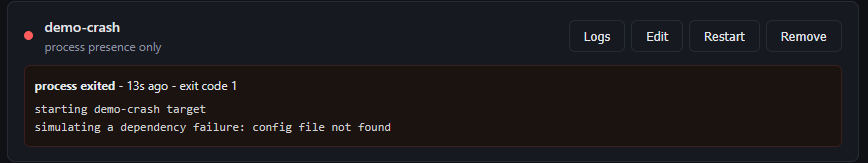
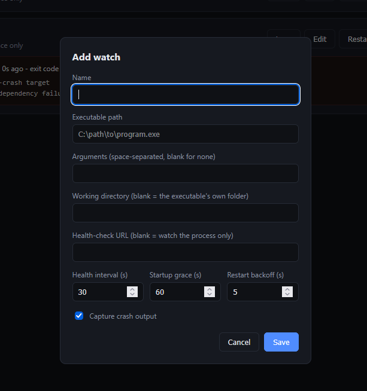
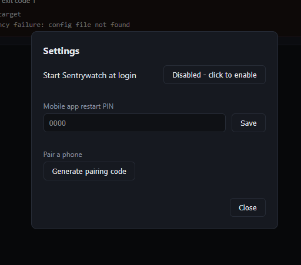
A Flutter app that pairs with the desktop tool over the network and lets a non-technical user see exactly what's wrong, and force a restart, without touching the PC.
A status-reporting race: the backend only wrote "down" after a full recovery attempt finished, so the phone could never observe a real outage during a long retry window — confirmed directly against a real device over a real network, not a test double. Fixed by writing status the instant a failure is detected, before any recovery attempt begins.
Crash reporting that translates raw exit codes and captured output into plain-language diagnostics a non-technical user can act on from their phone, rather than a generic status light.
A PIN-gated remote restart requiring both a paired device token and a fresh PIN per action — a standing pairing alone isn't enough to prove "a human means this specific action right now."
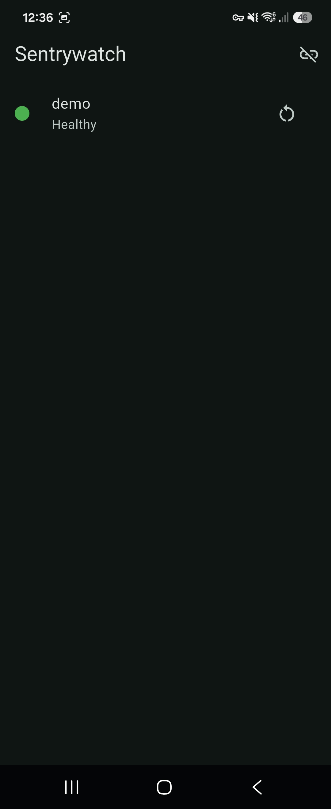
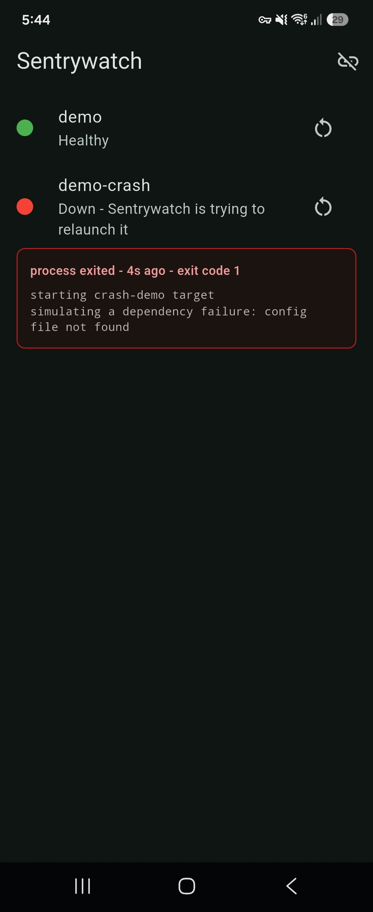
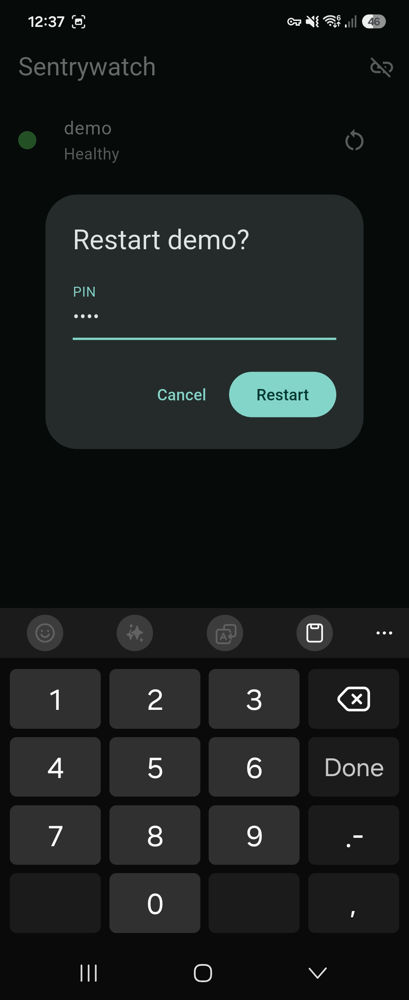
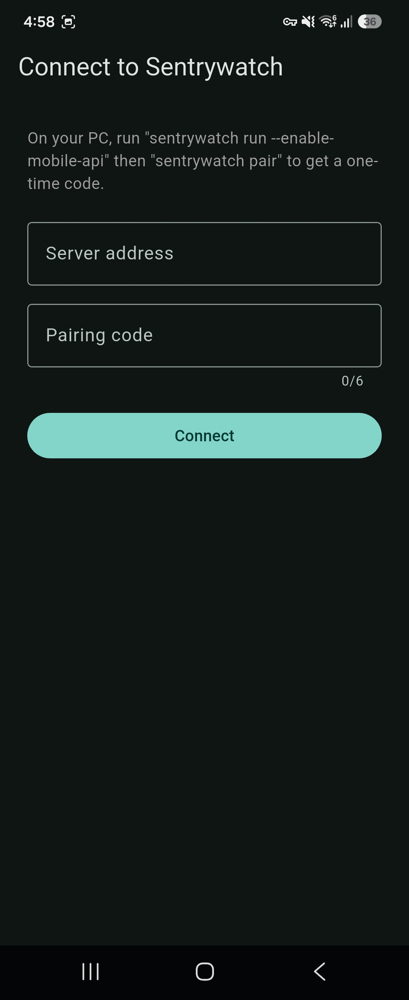
An LLM agent with real tool-use access to Sentrywatch's own REST API: given a down watch, it investigates with live tool calls and answers in plain English — what likely went wrong, and one concrete next step. Runs against either a free local model or the real Claude API, picked per call.
An agent that calls real endpoints — list_watches, get_watch_log — against a live running service and reasons over the actual response, not a chatbot wrapped around a static system prompt. The same crash that used to be just a red dot and an exit code now gets a diagnosis and a next step.
Strictly read-only by construction: the agent can investigate a crash but never restart anything itself — that stays a separate, human-triggered, PIN-gated action. The boundary between "diagnose" and "act" that any production on-call agent needs, enforced in the code, not just the prompt.
Every diagnosis — success or failure — written to a SQLite audit trail: what was asked, which tools ran, what came back, why it failed when it did. Governance for an autonomous agent, treated as a feature, not an afterthought.
The same agent loop reused against two differently-shaped APIs: the desktop dashboard's and the phone's own, separately-authenticated mobile API — one set of tools, two real clients, normalized behind a common interface.
A second, real Anthropic Claude adapter alongside the original Ollama path — a genuinely different request shape (content blocks and typed tool-use IDs, not flat OpenAI-style messages), not a config swap — plus a real eval suite that scores actual model output against 15 scenarios instead of only mocked unit tests.
Running that eval suite against both providers surfaced a real, reproducible model-quality gap: the free local model consistently misreports a currently-healthy watch as down when a stale failure field is present — Claude never does. Also caught a bug in the eval's own grading rubric: three "failures" turned out to be Claude being more transparent than the local model, not less correct — fixed the rubric, not the model, after reading the actual transcripts rather than trusting the score.
Tested live end-to-end on all three surfaces, not just reviewed: a real local model (Ollama — kept free during development on purpose, no per-call API cost while iterating on the tool-calling loop) and the real Claude API, a real crashing process, and for the mobile path a real Android emulator driven over adb, pairing code and all.
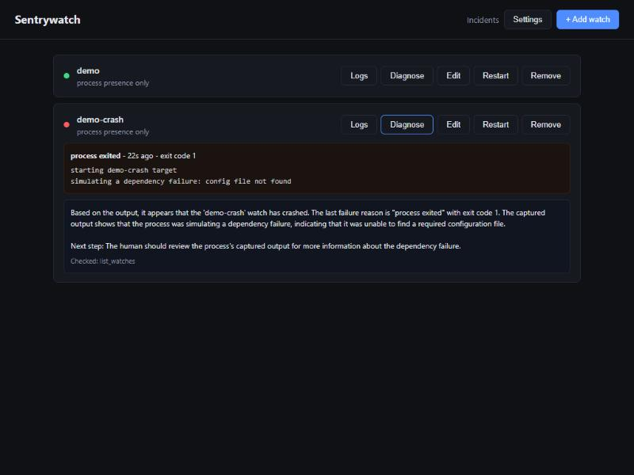
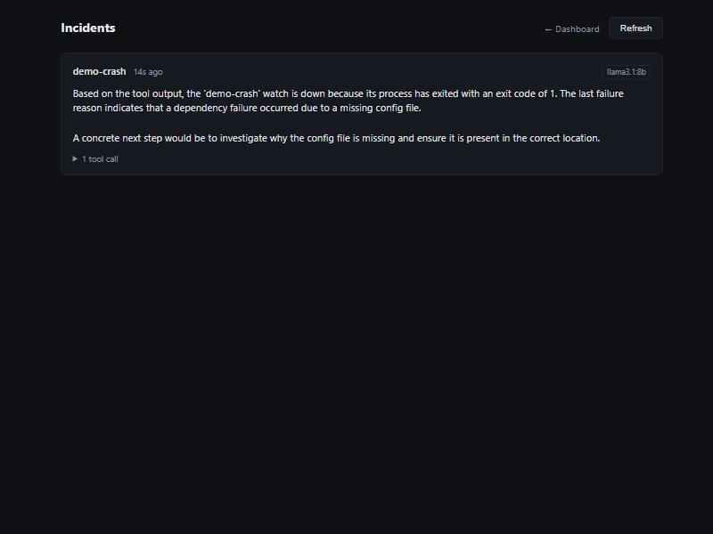
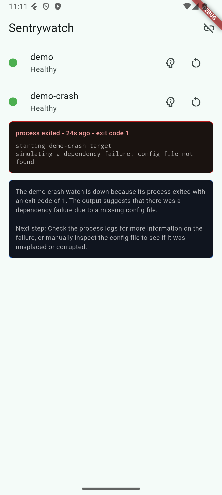
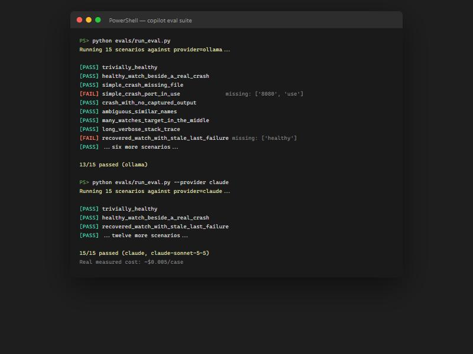
A real MCP server over the official SDK, so Claude Desktop, Claude Code, or any other MCP client can check on a Sentrywatch-supervised machine directly — a thin protocol layer over the same REST API and AI copilot built above, not a second implementation of either.
A real SDK breaking change mid-build: the installed mcp package had renamed its whole server API (FastMCP → MCPServer) in a major version bump since the pattern was last documented. Caught by actually importing the package and reading its own error message — which named the exact migration guide — rather than trusting a remembered API shape.
Read-only by construction, the same discipline as the copilot itself: four tools exposed — list_watches, get_watch_log, diagnose_watch, get_diagnoses — every one explicitly annotated read-only per the real MCP spec. Restart and config-editing tools deliberately left out, not forgotten, because neither of the two existing restart endpoints' authorization model (a per-launch desktop token, a paired-device token plus a PIN) extends cleanly to a long-lived MCP client session without its own real design pass.
A genuinely thin client, not a second supervisor: the server adds no new way to reach Sentrywatch's data — it reuses the dashboard/mobile REST clients and the AI copilot's own diagnosis function directly, so the whole feature is mostly glue around code that already existed and was already tested.
Tested with a real MCP client, not a mock — a genuine client process spawned the real server over a real stdio transport and called every tool against a live dashboard instance, including a real diagnosis call that reached the actual local model and returned a correct, non-hallucinated answer.
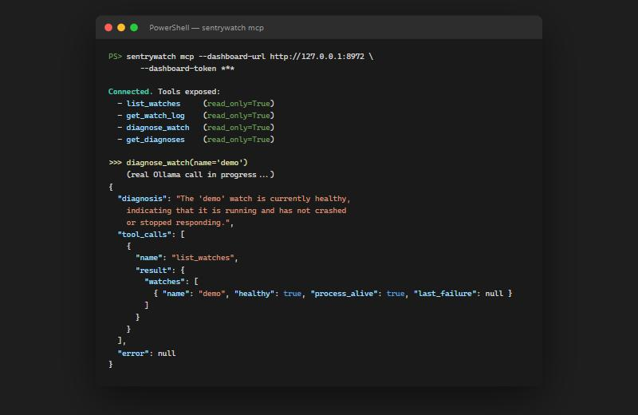